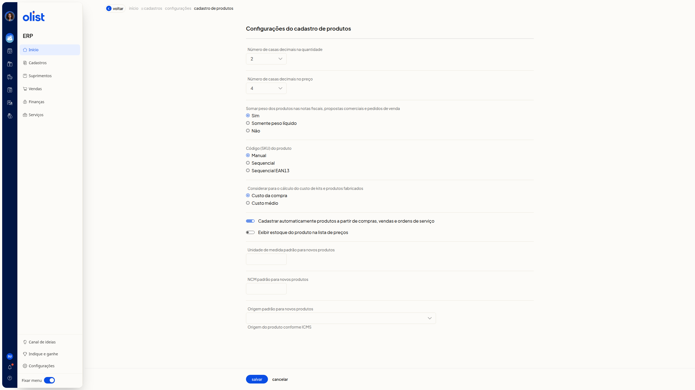

Configurações do cadastro de produtos
No ERP da Olist, a tela Configurações do cadastro de produtos reúne os parâmetros do cadastro de produtos. Você define casas decimais, a soma de peso em notas fiscais, propostas comerciais e pedidos de venda, o código (SKU), o custo de kits e produtos fabricados, o cadastro automático, a exibição de estoque na lista de preços e os padrões de unidade, NCM e origem para novos produtos.
Importante
O campo Considerar para o cálculo do custo de kits e produtos fabricados só aparece se você possui os módulos de preço de custo de produtos e de DRE.
Como acessar
Acesse início > cadastros > configurações > cadastro de produtos.
Pré-requisitos
- Autenticação no ERP: você precisa estar autenticado para abrir a tela de configurações do cadastro de produtos.
- Permissão para configurar cadastros de produtos: só com essa permissão você acessa estas configurações.
Configurações do cadastro de produtos
Nenhum parâmetro é obrigatório.
Número de casas decimais na quantidade: selecione 0, 1, 2, 3 ou 4.

Número de casas decimais no preço: selecione de 0 a 10.
Somar peso dos produtos nas notas fiscais, propostas comerciais e pedidos de venda: selecione Sim, Somente peso líquido ou Não.
Código (SKU) do produto: selecione Manual, Sequencial ou Sequencial EAN13.
Considerar para o cálculo do custo de kits e produtos fabricados: selecione Custo da compra ou Custo médio.
Estas duas opções ficam na mesma seção.
Cadastrar automaticamente produtos a partir de compras, vendas e ordens de serviço: ligue ou desligue.
Exibir estoque do produto na lista de preços: ligue ou desligue.
Unidade de medida padrão para novos produtos: informe a unidade de medida.
NCM padrão para novos produtos: informe o NCM.
Origem padrão para novos produtos: selecione uma origem. O texto de ajuda é Origem do produto conforme ICMS.
- 0 - Nacional, exceto as indicadas nos códigos 3 a 5
- 1 - Estrangeira - Importação direta, exceto a indicada no código 6
- 2 - Estrangeira - Adquirida no mercado interno, exceto a indicada no código 7
- 3 - Nacional, mercadoria ou bem com Conteúdo de Importação superior a 40% e inferior ou igual a 70
- 4 - Nacional, cuja produção tenha sido feita em conformidade com os processos produtivos básicos de que tratam as legislações citadas nos Ajustes
- 5 - Nacional, mercadoria ou bem com Conteúdo de Importação inferior ou igual a 40
- 6 - Estrangeira - Importação direta, sem similar nacional, constante em lista da CAMEX
- 7 - Estrangeira - Adquirida no mercado interno, sem similar nacional, constante em lista da CAMEX
- 8 - Nacional, mercadoria ou bem com Conteúdo de Importação superior a 70
No rodapé, acione salvar ou cancelar.
Links relacionados
Se precisar de ajuda com estas configurações, fale com o suporte.